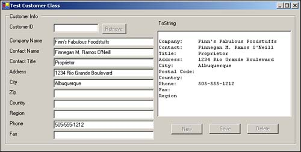

Create a Windows Form and name it frmHowTo9_2. Then place text boxes for each of the properties of the class, naming the text boxes with the property name, prefaced by txt. For example, the postal code text box should be named txtPostalCode. Next add command buttons called cmdDelete, cmdSave, cmdRetrieve, and cmdNew. Finally, add a RichTextBox control called rtbToString to contain the output of the ToString method. (This enables you to see how the Form maps to the data of the class. See Figure 9.1)
Figure 9.1. Arrange the controls on the form you created to look like this form.

Add a class declaration block to frmHowTo9_2 and name the class CCustomer. After the line Public Class CCustomer, type Implements ICustomer. This tells Visual Basic that the CCustomer class includes all of the properties and methods of the ICustomer interface as shown in Listing 9.9.
Listing 9.9 frmHowTo9_2.vb: The Empty Customer Class
Public Class CCustomer Implements ICustomer End Class
Copy all of the property and method declarations in the ICustomer interface, and paste them within the CCustomer class block.
Visual Basic .NET requires that you specify which property or method in your class implements which public member of your interface. After each property or method declaration that you just pasted into the CCustomer class block, you must add Implements ICustomer.[Property/Method Name].
Note

Visual Basic .NET allows you to have property and method names in your class that differ from the public member names listed in your interface. This feature exists because one class can implement many interfaces, and those interfaces can have public members of the same name. Although typing Implements ICustomer.[Property/Method Name] after a property and method with the same name-as in our example-might seem frustrating, it will come in handy when you write more complex code.
By default, all methods, properties, and module-level variables are Public unless an access modifier, such as Private or Protected, is used (see Table 9.2). It is, however, good programming practice to use the Public access modifier, so be explicit and add Public before each member.
Table 9.2. Visual Basic .NET Access Modifiers
Object
Purpose
Private
You can only access the member within the class.
Protected
You can only access the member from classes that are derived from (inherit from) the member's class.
Friend
You can only access the member by objects within the same project.
Protected Friend
You can only access the member by derived classes within the same project.
Public
You can access the member by any object.
When you are finished, your code should look like Listing 9.10.
Listing 9.10 frmHowTo9_2.vb: The Empty CCustomer Class
Public Class Customer Implements ICustomer Public ReadOnly Property CustomerID() As String _ Implements ICustomerData.CustomerID Public Property CompanyName() As String Implements ICustomerData.CompanyName Public Property ContactName() As String Implements ICustomerData.ContactName Public Property ContactTitle() As String _ Implements ICustomerData.ContactTitle Public Function Delete() As Boolean Implements ICustomerData.DeleteNote
Copying and pasting the code from the interface will result in code with an invalid syntax because of the lack of End Property and End Function/Sub lines. Although this doesn't matter for the moment, it does disable Intellisense, which normally appears after typing both Implements and the period after the Interface name. If you want to enable Intellisense, press Enter at the end of each property and method declaration. Doing so inserts the appropriate End tag. When all the tags are in the class, Intellisense is reenabled.
Add private variables directly below the class declaration to store class data, as shown in Listing 9.11. You should have one variable for each property. As mentioned in Chapter 3, "Viewing Data with ADO.NET," prefacing class-level variables with "m" is a Visual Basic programming convention.
Listing 9.11 frmHowTo9_2.vb: Class Variable Declarations
Public Class CCustomer Implements ICustomer #Region "Class Variables" Private mstrCustomerID As String Private mstrCompanyName As String Private mstrContactName As String Private mstrContactTitle As String Private mstrAddress As String Private mstrCity As String Private mstrRegion As String Private mstrCountry As String Private mstrPostalCode As String Private mstrPhone As String Private mstrFax As String #End RegionWrite code to set and return data for the properties. Place your cursor at the end of a property declaration line, and press Enter. Visual Studio .NET automatically inserts code blocks for setting and getting your property. If you have worked with properties before, you might notice that Microsoft has changed the syntax. Listing 9.12 shows Visual Basic 6 property get and let declarations, each with its own separate block.
Listing 9.12 Property Declarations in Visual Basic 6
Public Property Get PropertyName() As String PropertyName = mstrClassVariable End Property Public Property Let PropertyName(ByVal strValue As String) mstrClassVariable = strValue End PropertyIn Visual Basic .NET, the property declaration has been combined in the format shown in Listing 9.13.
Listing 9.13 Property Declarations in Visual Basic .NET
Public Property PropertyName() As String Get Return mstrClassVariable End Get Set(ByVal Value As String) mstrClassVariable = Value End Set End PropertyFor each of your properties, add Return and the variable you declared in step 1 in the Get block. In the Set block, type the name of a variable from step 1 and = Value. All of your property declarations should now look like Listing 9.14.
Listing 9.14 frmHowTo9_2.vb: Some Property Declarations for the CCustomer Class
Public ReadOnly Property CustomerID() As Customers.CCustomerID Implements ICustomer.CustomerID Get Return mCustomerID End Get End Property Public Property CompanyName() As String Implements ICustomer.CompanyName Get Return mstrCompanyName End Get Set(ByVal Value As String) mstrCompanyName = Value End Set End PropertyTo test your properties, you need to write a bit more code. First, you might want to implement the ToString method that returns all the object's properties as a string. Also, you will want a method that clears the form for use with a new object. Listing 9.15 shows one way to implement ToString, with each property printing on a separate line, as well as a ClearAllTextBoxes method.
Listing 9.15 frmHowTo9_2.vb: The ToString Method Outputting Property Information
Public Overrides Function toString() As String Implements ICustomer.ToString Dim strReturn As String strReturn = Me.CustomerID & vbCrLf strReturn = strReturn & "Company: " & Me.CompanyName & vbCrLf strReturn = strReturn & "Contact: " & Me.ContactName & vbCrLf strReturn = strReturn & "Title: " & Me.ContactTitle & vbCrLf strReturn = strReturn & "Address: " & Me.Address & vbCrLf strReturn = strReturn & "City: " & Me.City & vbCrLf strReturn = strReturn & "Postal Code: " & Me.PostalCode & vbCrLf strReturn = strReturn & "Country: " & Me.Country & vbCrLf strReturn = strReturn & "Phone: " & Me.Phone & vbCrLf strReturn = strReturn & "Fax: " & Me.Fax & vbCrLf strReturn = strReturn & "Region " & Me.Region & vbCrLf Return strReturn End Function Protected Sub ClearAllTextBoxes() Me.txtAddress.Text = "" Me.txtCity.Text = "" Me.txtCompanyName.Text = "" Me.txtContactName.Text = "" Me.txtContactTitle.Text = "" Me.txtCountry.Text = "" Me.txtCustomerID.Text = "" Me.txtFax.Text = "" Me.txtPhone.Text = "" Me.txtRegion.Text = "" Me.txtPostalCode.Text = "" Me.rtbToString.Text = "" End SubThe Overrides keyword is necessary because your class already has a ToString method. You didn't write that method, but it's there. This is because every class inherits from the Object class, which defines a ToString method. Don't worry about this: You'll learn about inheritance and overriding methods later in this chapter.
Now you need to add three pieces of code to the form that will instantiate the CCustomer class, and you need to allow its properties to be modified through the text boxes.
First, add a form-level variable called mCustomer of type CCustomer to the form. Use the new keyword in the declaration to create a new instance of CCustomer.
Next, add code to each TextBox control's TextChanged event that updates property values in mCustomer. Note that Listing 9.16 does not actually refer to mCustomer. Instead, Listing 9.16 calls an as-yet-undefined method called TextBoxChange that handles changes to mCustomer. This method is defined and explained in step 11.
Listing 9.16 frmHowTo9_2.vb: The TextChanged Event of the txtPostalCode Text Box That Calls the TextBoxChange Method
Protected Sub txtPostalCode_TextChanged(ByVal sender As System.Object, ByVal e As System.EventArgs) Handles txtPostalCode.TextChanged TextBoxChange("PostalCode", txtPostalCode.Text) End SubFinally, add the TextBoxChange method that takes the value passed from each text box's TextChanged event and writes it to the appropriate property of the mCustomer object. Listing 9.17 shows a sample of this code, although it does not list a case for each text box. Centralizing all access to the mCustomer object in one method allows you to have one exception-handling area.
Listing 9.17 frmHowTo9_2.vb: An Excerpt of the TextBoxChange Method That Writes Values in Text Boxes to Object Properties
Protected Sub TextBoxChange(ByVal pstrProperty As String, _ ByVal pstrValue As String) Try Select Case pstrProperty Case "Address" mCustomer.Address = pstrValue Case "CompanyName" mCustomer.CompanyName = pstrValue Case "PostalCode" mCustomer.PostalCode = pstrValue End Select ' Write the class' properties to the RichTextBox ' to aid debugging. Me.rtbToString.Text = mCustomer.ToString() Catch ex As Exception MsgBox(ex.Message) End Try End Sub